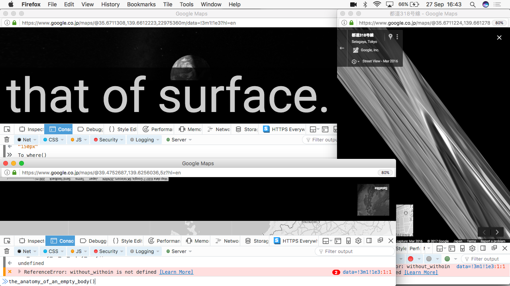
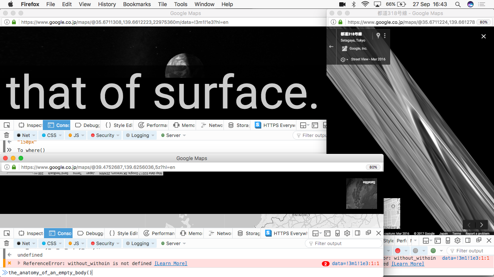
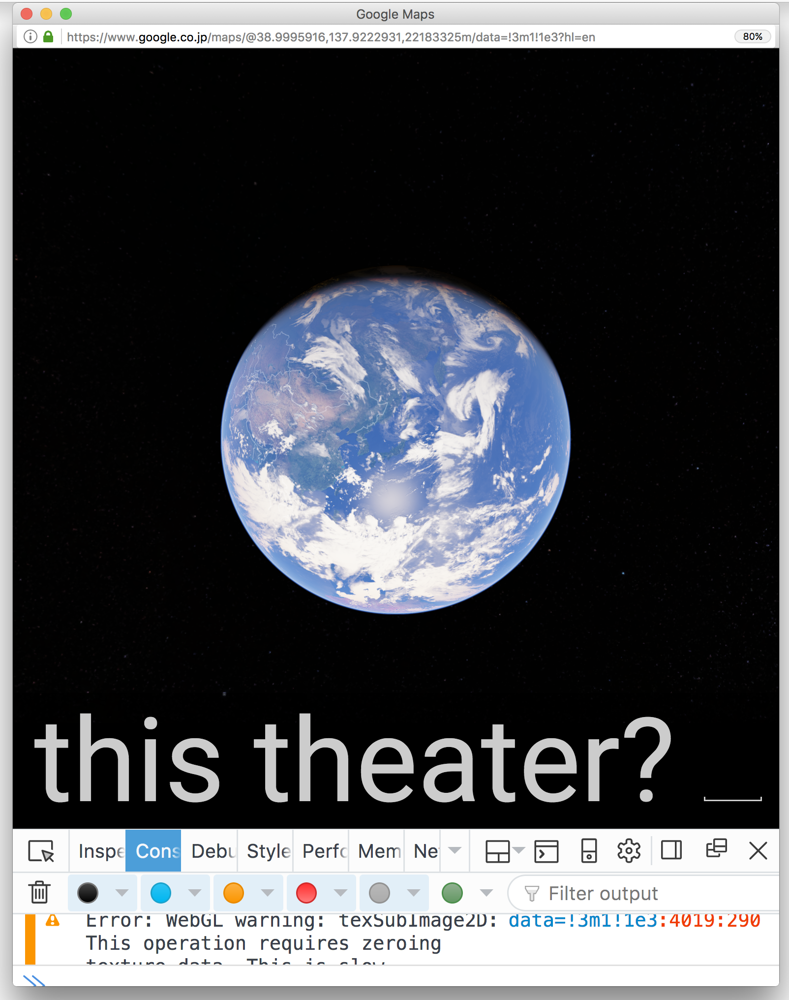
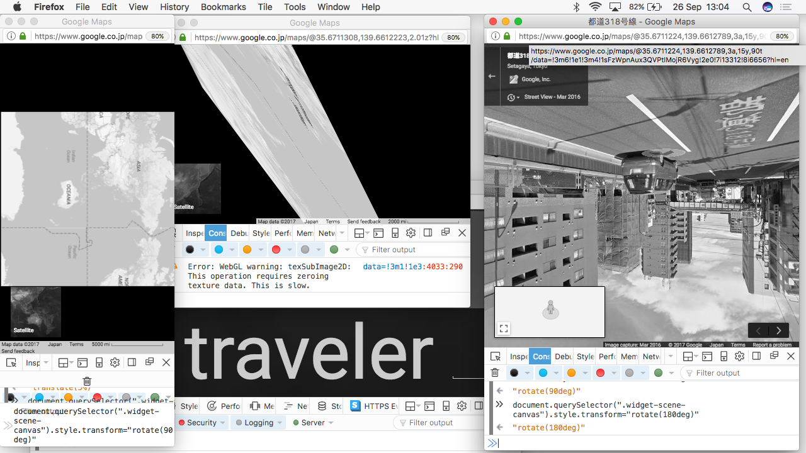
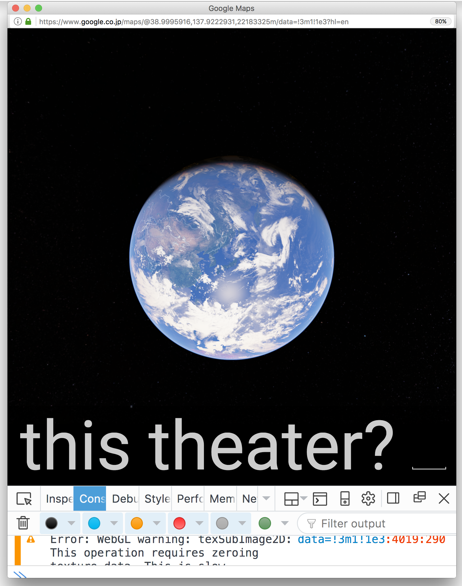
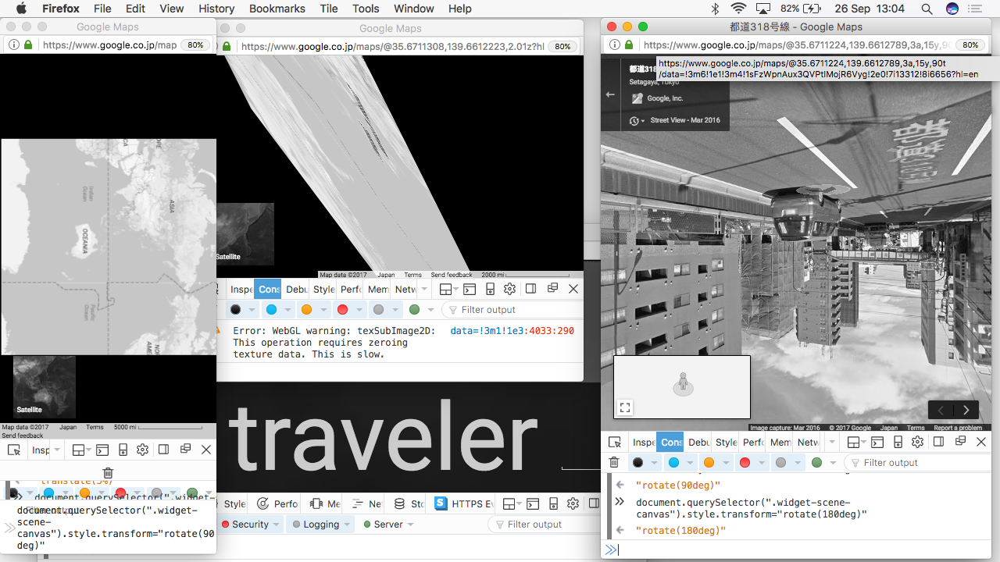
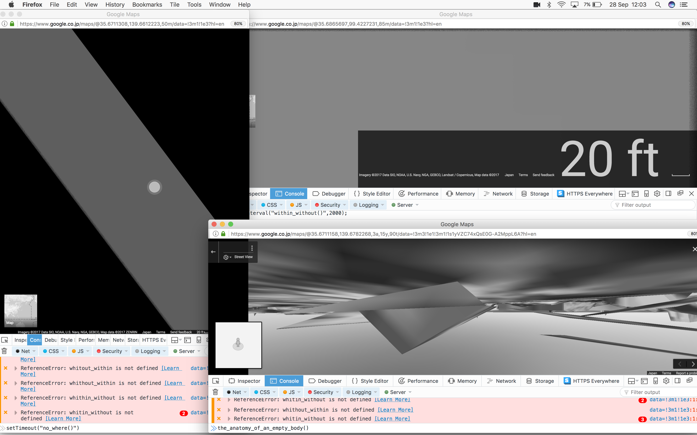
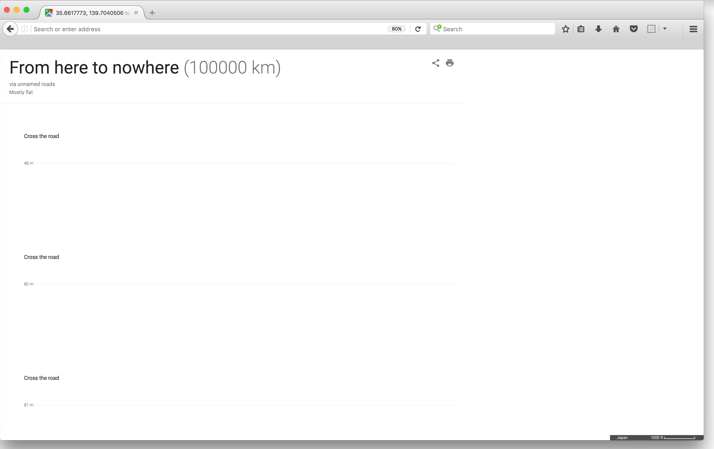
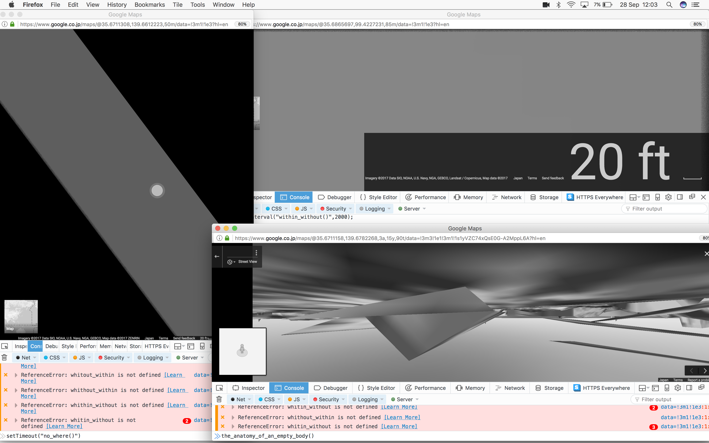
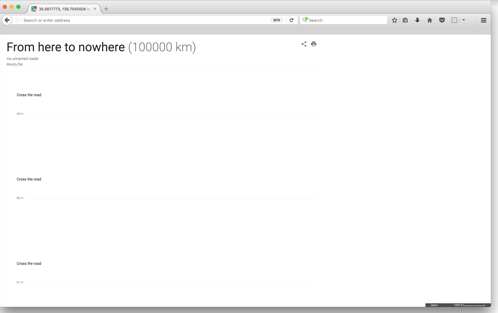

‘Our own body is the first “other” and the first “alien thing” we confront’.
Otherness or Alterity – or more simply: Outside (Soto, in Japanese)…[which] does not belong to a distant, abstract, ethereal sphere, but consists in the first thing we experience as embodied human beings: the Otherness of our own body.[1]
'All nerves of the universe' presents a series of coding experiments questioning the body in motion, mapping and navigation technologies.
Using techniques such as geocoding, javascript operations in the web browser and online maps — this piece aims at projecting new (dis)orientations, fusing physical and virtual dimensions of space, expanding peripheries, borders, inner, outer, skin. opening up space for other relations between bodies, trajectories and contexts.
Privileging micro-movements: slow, ocasionally spasmodic, in the edge of stillness — kinetic activators of duration, or perhaps a nonmeasurable temporality.
Interweaving live coding with speculative body-terrain topographies forming a new network of nerves.
…evade it with the footsteps of butoh, the footsteps of a Ninja, stealthy footsteps, velvet footsteps, and, become metallic, nomadic, hermetic!
In nomadism, the only question is that of surface. For, within a space, even if it is rationally squared and segmented, in other words split up into inside and outside, it is always possible to slide to stretch the surface like an expanse of “skin”.
For the nomad, the inside extends into the outside.' [2]
[1] Dancing on the edge: Ko Murobushi’s Inner Portable Midnight, 2016
[2] I write: “The first dancer was an ironsmith”, 1992
 

 




 


